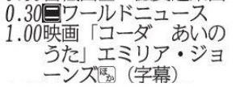
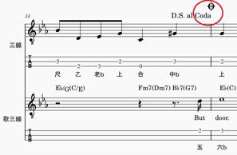
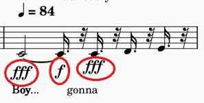
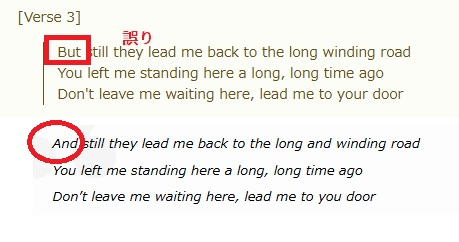

うるがいの話 ある日
最新: コーダ【うるがいの話 ある日】とは 一日だけのプログです
『うるがいの話』の最新一日だけのプログで、通信料が少なく経済的だ。カニの画像をクリックすると全ての日付が載る『うるがいの話』サイトを表示します
|
|
【うるがいの話】 うるがい(ｳﾙｶﾞｲ urugai)とは、『もずくがに』の名前でとても大きくなります。 |
|---|---|
|
|
【カミマヤーの話】 猫のことを方言でマヤーといいます。カミマヤー（kamimayaa）とは、神の猫のことです。 |
|
【たながぁの音楽】 たながぁ（ﾀﾅｶﾞｰ tanagaa）とは手長えびのことで、何種類かあり大きいのは車 エビぐらいになります。 |

|
【ぶながぁの話】 ぶながぁ(ﾌﾞﾅｶﾞｰ bunagaa)とは、赤い髪の毛、赤い身体、そして身長は１ｍ２０ｃｍ ぐらい、川の蟹を食べているの目撃された。場所は沖縄県国頭郡大宜味村のと ある村僕の隣近所に住んでいる爺さんから、聞いた話です。 |
|
|
【ギーマの話】 ギーマ(giima)とは、山原の里山に咲くスズランに似た、 花を付けます。実は食べられます、 気が付くと口の周りが紫になっています。 |
2024年12月16日 (月）コーダ
16:25
テレビ欄の映画のタイトルをみると『コーダ あいのうた』、フムフム

あのコーダか。そして、同じく新聞の投稿蘭には

あんなふうにふきたい（新聞の投稿 小学４年生より）
一番びっくりしたことは楽器をひいていたが、強弱をうまくつかってい
たことと、歌を歌う人が高い声で歌っていたことです。
私も今頑張っている音楽部で、あんなふうにトランペットをふきたいで
す。
フムフム、きのうユーチューブ動画用の楽譜を作っていたのピーンとく
る。
音符の強弱が

ネットで、『コーダ あいのうた』のコーダを調べてみたら、違う意味
だった。映画のコーダとは
コーダ（ＣＯＤＡ）とは「Ｃｈｉｌｄｒｅｎ ｏｆ Ｄｅａｆ Ａｄｕ
ｌｔｓ」の略で、聴力に障害のある親のもとで育った、健聴者の子ども
を指します。
フムフム、なるほど。ついでなので楽譜のコーダは、
ｃｏｄａ（コーダ）は、イタリア語で「尾」を意味し楽曲のエンディン
グ部分を指します。
ん、英語の綴りは一緒なんだけど。
誤りと言えば、楽譜の歌詞を打ち込んでいたら、参考にしている複数の
歌詞に相違がある、正しいのどっちなんだと調べる。

ネットで、検索の上位にあるのに間違っているとは。せっかくなのでア
ップした動画は
『ビートルズ The Long And Winding Road』３分２５秒
https://youtu.be/I-bh764AWr4
あ、映画は最高ですね